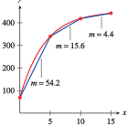

Subsection 5.1 The Shape of the Graph
Creating a good model for a situation often begins with deciding what kind of function to use. An appropriate model can depend on very qualitative considerations, such as the general shape of the graph. What sort of function has the right shape to describe the process we want to model? Should it be increasing or decreasing, or some combination of both? Is the slope constant or is it changing?
In Examples 5.1.1 and 5.1.3, we investigate how the shape of a graph illustrates the nature of the process it models.
Example 5.1.1.
Forrest leaves his house to go to school. For each of the following situations, sketch a possible graph of Forrest's distance from home as a function of time.
Forrest walks at a constant speed until he reaches the bus stop.
Forrest walks at a constant speed until he reaches the bus stop; then he waits there until the bus arrives.
Forrest walks at a constant speed until he reaches the bus stop, waits there until the bus arrives, and then the bus drives him to school at a constant speed.
-
The graph is a straight-line segment, as shown in figure (a). It begins at the origin because at the instant Forrest leaves the house, his distance from home is 0. (In other words, when \(t = 0, y = 0\text{.}\)) The graph is a straight line because Forrest has a constant speed. The slope of the line is equal to Forrest’s walking speed.

The graph begins like the graph in part (a). But while Forrest waits for the bus, his distance from home remains constant, so the graph at that time is a horizontal line, as shown in figure (b). The line has slope \(0\) because while Forrest is waiting for the bus, his speed is \(0\text{.}\)
The graph begins like the graph in part (b). The last section of the graph represents the bus ride. It has a constant slope because the bus is moving at a constant speed. Because the bus (probably) moves faster than Forrest walks, the slope of this segment is greater than the slope for the walking section. The graph is shown in figure (c).
Checkpoint 5.1.2.
Erin walks from her home to a convenience store, where she buys some cat food, and then walks back home. Sketch a possible graph of her distance from home as a function of time.
The graphs in Example 5.1.1 are piecewise linear, because Forrest traveled at a constant rate in each segment. In addition to choosing a graph that is increasing, decreasing, or constant to model a process, we can consider graphs that bend upward or downward. The bend is called the concavity of the graph.
Example 5.1.3.
The two functions described in this example are both increasing functions, but they increase in different ways. Match each function to its graph and to the appropriate table of values.
The number of flu cases reported at an urban medical center during an epidemic is an increasing function of time, and it is growing at a faster and faster rate.
The temperature of a potato placed in a hot oven increases rapidly at first, then more slowly as it approaches the temperature of the oven.
\((1)\)
| \(x\) | \(0\) | \(2\) | \(5\) | \(10\) | \(15\) |
| \(y\) | \(70\) | \(89\) | \(123\) | \(217\) | \(383\) |
\((2)\)
| \(x\) | \(0\) | \(2\) | \(5\) | \(10\) | \(15\) |
| \(y\) | \(70\) | \(219\) | \(341\) | \(419\) | \(441\) |

-
The number of flu cases is described by graph(A) and table (1). The function values in table (1) increase at an increasing rate. We can see this by computing the rate of change over successive time intervals.
\begin{gather*} x = 0 \text{ to } x = 5: ~~~~~~~~m = \frac{\Delta y}{\Delta x}=\frac{123-70}{5-0} = 10.6\\ \\ x = 5\text{ to } x = 10:~~~~~~~~ m = \frac{\Delta y}{\Delta x}=\frac{217-123}{10-5} = 18.8\\ \\ x = 10 \text{ to } x = 15:~~~~~~~~m = \frac{\Delta y}{\Delta x} =\frac{383 - 217}{15 - 10} = 33.2 \end{gather*}The increasing rates can be seen inthe figure below; the graph bends upward as the slopes increase.

-
The temperature of the potato is described by graph(B) and table (2). The function values in table (2) increase, but at a decreasing rate.
\begin{gather*} x = 0\text { to } x = 5:~~~~~~~~m =\frac{\Delta y}{\Delta x}=\frac{341-70}{5 - 0}= 54.2\\ \\ x = 5 \text{ to } x = 10:~~~~~~~~m =\frac{\Delta y}{\Delta x}=\frac{419 - 341}{10 - 5}= 15.6\\ \\ x = 10 \text{ to } x = 15:~~~~~~~~m =\frac{\Delta y}{\Delta x}=\frac{441 - 419}{15 - 10}= 4.4 \end{gather*}The decreasing slopes can be seen in the figure below. The graph is increasing but bends downward.

Checkpoint 5.1.4.
Francine bought a cup of cocoa at the cafeteria. The cocoa cooled off rapidly at first, and then gradually approached room temperature. Which graph more accurately reflects the temperature of the cocoa as a function of time? Explain why. Is the graph you chose concave up or concave down?

(a): The graph has a steep negative slope at first, corresponding to an initial rapid drop in the temperature of the cocoa. The graph becomes closer to a horizontal line, corresponding to the cocoa approaching room temperature. The graph is concave up.